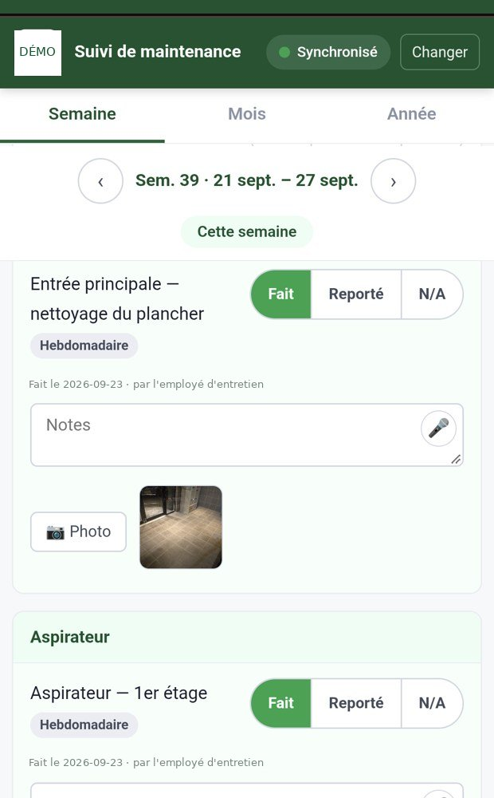
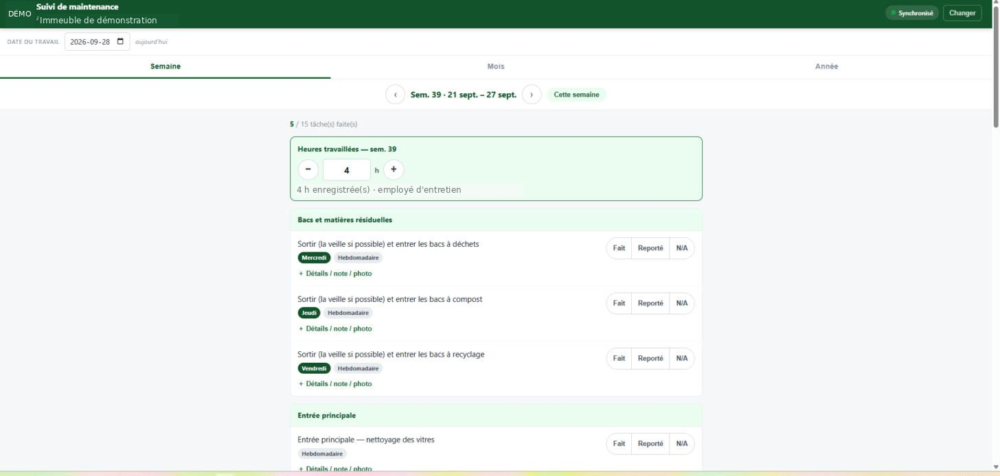
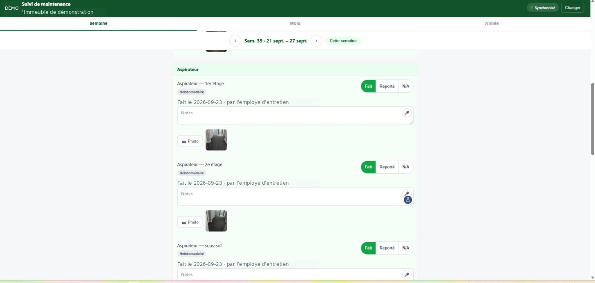
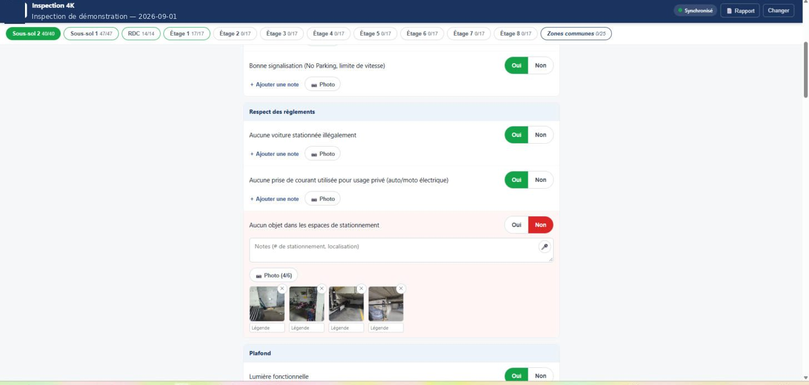
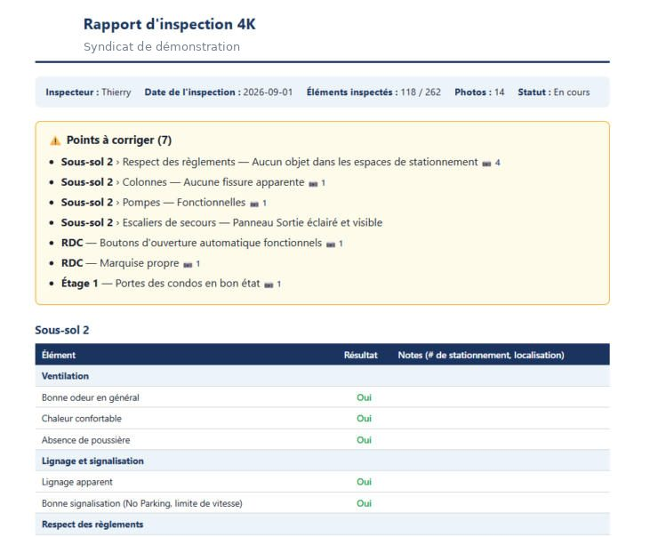
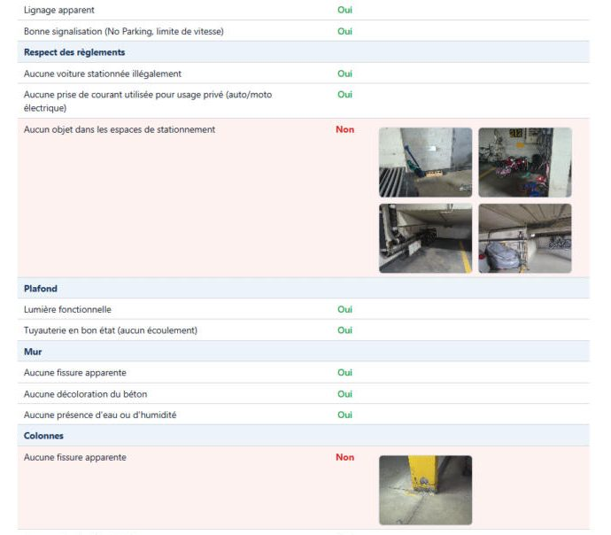
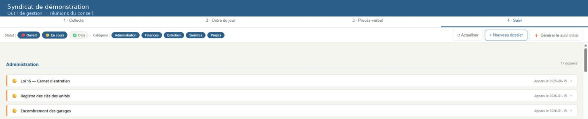

Concepteur pédagogique et intégrateur e-learning. Plus de 25 ans en formation, dont six ans auprès des experts en sinistre d'un grand assureur de dommages.
Les formations que j'ai conçues chez mes employeurs leur appartiennent et ne peuvent pas être diffusées. Les pièces ci-dessous ont donc été créées pour ce portfolio, sur des cas fictifs, avec les mêmes méthodes de travail.
Pièce 1 · module interactif
Sinistre au Mérisier
Une mise en situation jouable, où l'apprenant mène une enquête avant de trancher. Un dégât d'eau en copropriété : qui paie quoi, et le syndicat a-t-il intérêt à réclamer ?
Les experts en sinistre connaissent la théorie de la copropriété, mais tranchent souvent trop tôt, avant d'avoir obtenu les documents qui portent la réponse. Une formation qui explique la règle ne corrige pas ça. Une formation qui les met en position de décider avec un dossier incomplet, oui.
Les mécaniques
Enquête à démarches libres. Six interlocuteurs, joignables par téléphone ou par courriel. Le téléphone répond tout de suite mais ne donne rien d'écrit ; le courriel rapporte les documents, mais coûte une journée.
Dossier vivant. Les réponses s'empilent dans un fil, et les documents obtenus deviennent consultables : déclaration de copropriété, annexe décrivant l'unité standard de base, polices d'assurance, rapport d'intervention, estimation des travaux.
Décision par glisser-déposer, puis deux questions sur la franchise. Le montant de la franchise change à chaque partie : impossible d'y répondre sans avoir lu la police.
Débreffage assemblé selon le parcours. Aucune rétroaction ne révèle une information que l'apprenant n'a pas demandée. Ses démarches sont comptées et comparées au minimum requis.
Fiche de conception
Public
Experts en sinistre, dommages matériels
Objectifs
Choisir ses interlocuteurs ; distinguer parties communes, unité standard de base et améliorations ; répartir les dommages ; déterminer si la part du syndicat dépasse sa franchise
Durée
12 à 18 minutes selon le nombre de démarches
Stratégie
Apprentissage par l'enquête et la décision, avec rétroaction différée pour éviter la réponse par tâtonnement
Production
HTML et JavaScript, générés en vibe coding avec un agent de codage IA ; aucune dépendance, fonctionne sur téléphone
Variante
Franchise tirée au hasard à chaque tentative, ce qui rend le module rejouable et empêche la transmission de la réponse entre collègues
Pièce 2 · document de production
Le scénarimage derrière le module
Ce que je remets à une équipe d'intégration : un bloc par écran, le texte à l'écran, la narration avec les noms de fichiers audio, les rétroactions positives et négatives séparées, et la colonne des actions et des embranchements.
On y trouve aussi les directives générales — menu, structure, personnages, lexique, variables — et le tableau des réponses attendues avec les montants. C'est le document qui permet à quelqu'un d'autre que moi de produire le module.
Pièce 3 · outils de terrain
Des outils conçus avec l'IA, utilisés au quotidien
Dans mon poste actuel, j'ai conçu et déployé, avec des agents de codage IA, des applications web que mon équipe utilise sur son téléphone. En voici trois, choisies parce que leur structure est celle d'un dispositif de formation.
Le suivi de maintenance

L'outil tel qu'il est réellement utilisé : sur le téléphone de l'employé, debout dans l'immeuble. Tout se fait au pouce, une main libre.

Chaque tâche porte sa fréquence et trois verdicts : Fait, Reporté, N/A. Le bloc d'heures se règle au pouce, et le compteur de tâches faites donne l'avancement en un coup d'œil.

La preuve du travail accompli : une note qu'on peut dicter plutôt qu'écrire, et une photo prise sur place. La date et l'auteur s'inscrivent d'eux-mêmes.
La grille d'inspection et son rapport

La grille : 262 éléments répartis par zone, chacune avec son avancement chiffré. Un « Non » fait basculer la ligne et ouvre la saisie — note dictable, jusqu'à six photos, chacune avec sa légende.

Le rapport produit par l'outil. Bandeau de synthèse, puis les sept points à corriger en tête, chacun avec son chemin complet et le nombre de photos qui l'appuient. Le détail vient après.

Dans le détail, la preuve reste collée au constat : les photos accompagnent la ligne en écart, pas une annexe en fin de document.
La boucle des réunions

Un troisième outil, montré ici sans son contenu : quatre étapes qui se suivent — collecte des sujets, ordre du jour, procès-verbal, puis liste de suivi. Chaque décision prise en réunion devient un dossier daté qui reste ouvert jusqu'à sa clôture.
C'est le même problème qu'un plan d'action après une formation : les engagements pris ensemble finissent dans un document que personne ne rouvre. Ici, le procès-verbal alimente directement la liste de suivi, et le suivi revient à l'ordre du jour de la rencontre suivante.
Ce que ça vaut en formation
Ces deux outils ont la même ossature qu'un dispositif d'observation des compétences : un critère observable, un verdict, une trace. La grille d'inspection va plus loin — elle produit son rapport, et ce rapport commence par les écarts plutôt que par la liste complète. C'est exactement ce qu'on attend d'un rapport d'observation après une formation : la personne qui le reçoit sait quoi faire en dix secondes.
La dictée n'est pas un gadget : c'est ce qui permet de documenter avec des gants, sur une échelle ou dans un sous-sol inondé. La photo légendée remplace le rapport qu'on n'écrira jamais le soir venu. Et l'avancement par zone joue le rôle d'une barre de progression dans un parcours d'apprentissage.
J'ai mené chacun de ces outils de l'analyse du besoin jusqu'à l'adoption par un utilisateur non technique. C'est de l'ingénierie de la performance, appliquée à ma propre équipe.
Captures d'une application réelle en service. Les noms, le numéro d'immeuble et les données identifiantes ont été remplacés.